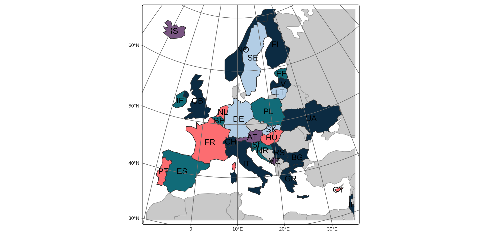
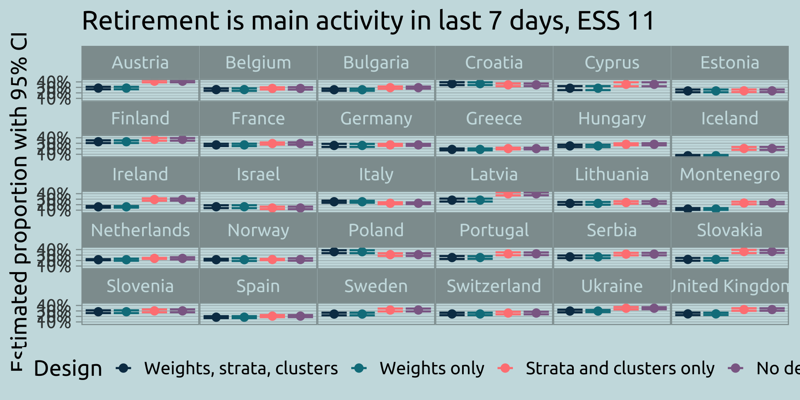
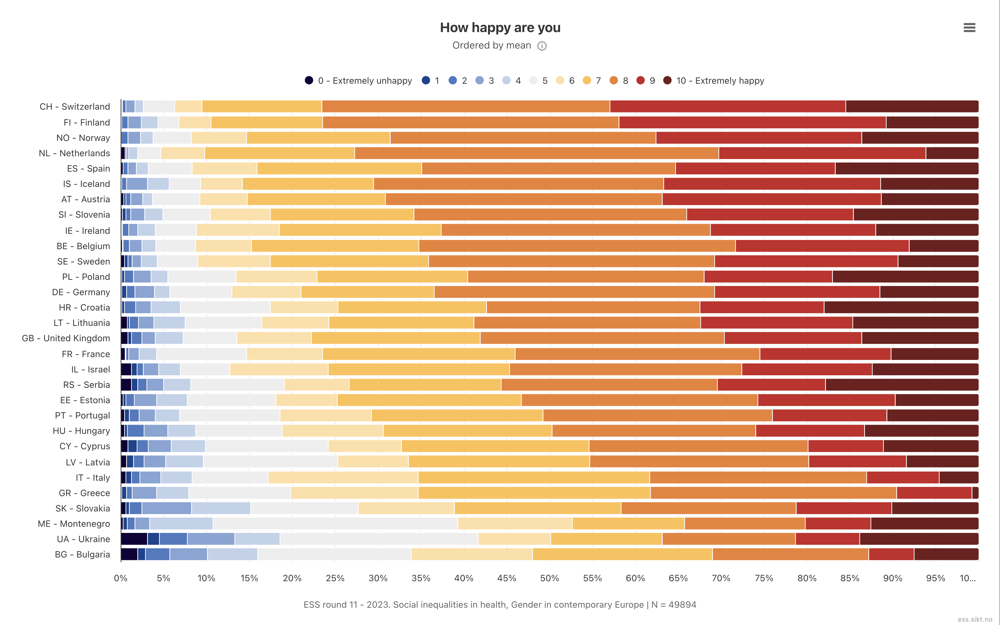
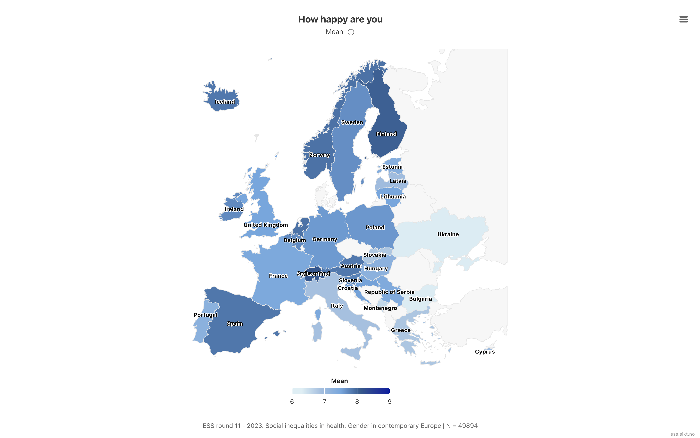
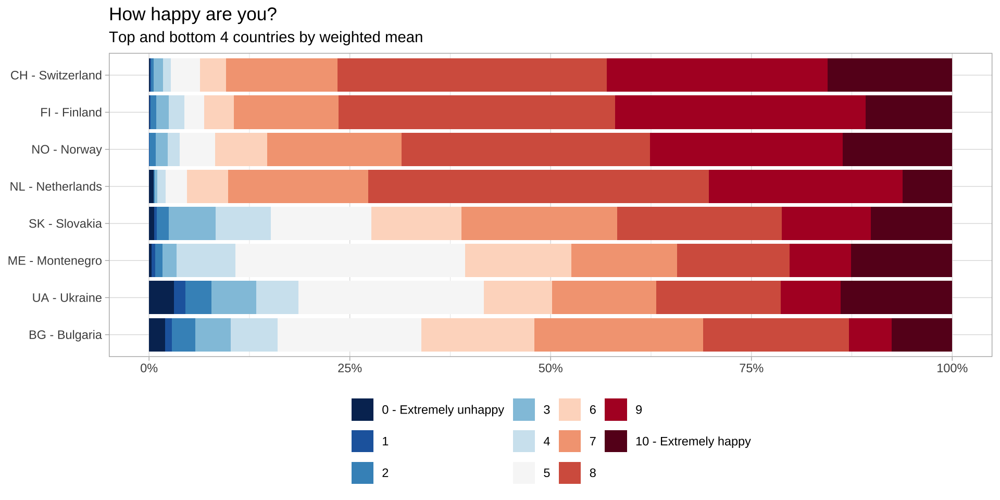
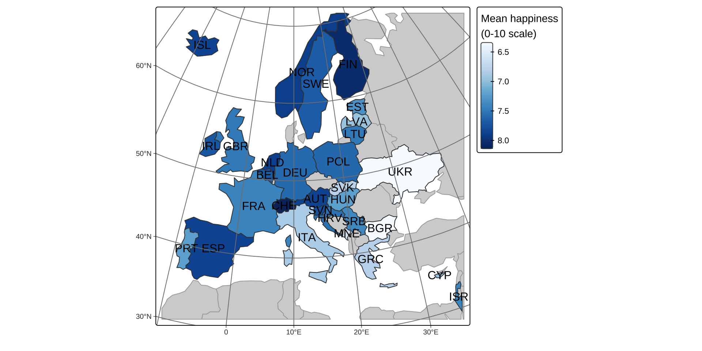

Working with Weights and Sampling Designs for Official Statistics
Tidy Survey Analysis in R
uRos 2026 Tutorial - Paris
Introduction
Instructors
Stephanie
Zimmer
Rebecca
Powell
Isabella
Velásquez
Overview of tutorial
At the end of this tutorial, you should be able to:
- Specify a survey design in R to create a survey object
- Calculate point estimates and their standard errors with survey data
- Create tables and graphs incorporating survey data and standard errors
Logistics
- We will be using Posit Cloud for exercises
- All materials are found at:
Libraries Needed for Today
Note: These are already installed in Posit Cloud
R Packages for Survey Analysis
- {survey} package first on CRAN in 2003
- descriptive analysis
- statistical testing
- modeling
- weighting
- {srvyr} package first on CRAN in 2016
- “wrapper” for {survey} with {tidyverse}-style syntax
- only descriptive analysis
Why use {srvyr} over {survey}?
- Use the pipe function
%>%or|> - Ability to use tidy selection
- Functions follow
snake_caseconvention
Brief note on pipes with {survey}
Comparison of {dplyr} and {srvyr} Functions
Apply {dplyr} functions to survey objects
- A few functions in {srvyr} have counterparts in {dplyr}
dplyr::summarize()andsrvyr::summarize()dplyr::group_by()andsrvyr::group_by()
- Based on the object class, R will recognize which package to use
Using summarize() to calculate mean and median
Grouping
Using {srvyr} functions on non-survey objects
Error in `summarize()`:
ℹ In argument: `area_mean = survey_mean(land_area_km2)`.
Caused by error in `cur_svy()`:
! Survey context not setEuropean Social Survey (ESS)
Overview
- Conducted across Europe every 2 years since 2001
- Cross-sectional sample (new samples each round)
- Topics include living conditions, social structure, public opinion and attitudes
- Sampling designs vary by country but have oversight for rigor
Countries for round 11 (2023-2024)

Accessing ESS data
Create a ESS account and get your user ID
Open R environ file
- Add your user ID to R environ
Restart your R session
Load the ESS data into R
Read data subset for this course
- This data is a subset of columns of full data
- Includes derived variables we created for this course
- See data cleaning code
Why weight? Why use the design?
- Differential selection probabilities and nonresponse are accounted for in analytic weights
- Weights are post-stratified by gender, age, education, and geographic region
- Not using weights leads to bias
- Not using design likely leads to incorrect precision, wrong degrees of freedom and not accounting for clustering
Estimates changing with weights

ESS Variable Viewer
- Explore ESS variables at the Variable Viewer
Sampling designs
Sampling methods
Units can be selected in various ways such as:
Simple random sampling
(with or without replacement)
Every unit has the same chance of being selected
Systematic sampling
Sample from an ordered list, selecting individuals at an interval with a random starting point
Probability proportional to size
Probability of selection is proportional to “size”
Complex designs
Designs can also incorporate stratification and/or clustering:
Stratified sampling
Divide population into mutually exclusive subgroups (strata). Randomly sample within each stratum
Clustered sampling
Divide population into mutually exclusive subgroups (clusters). Randomly sample clusters, then individuals within clusters
Why does design matter?
The design type impacts the variability of the estimates
Weights impact the point estimate and the variability estimates
Specifying the components of the design (strata and/or clusters) and weights in R is necessary to get correct estimates
Determining the design
Check the documentation such as methodology, design, analysis guide, or technical documentation
Documentation will indicate the variables needed to specify the design. Look for:
- Weight (almost always)
- Strata and/or clusters/PSUs (sometimes labeled pseudo-strata/pseudo-clusters) — or, instead, replicate weights
- Finite population correction or population sizes (uncommon)
Documentation may include SAS, SUDAAN, Stata and/or R syntax
Design-based vs. replicate weights
Two ways to tell R about a sampling design, depending on what the documentation provides:
Strata / clusters / weights are available
Use as_survey_design()
Only replicate weights are available
Use as_survey_rep()
- Some surveys provide both; others release only replicate weights to protect respondent confidentiality
- Either path produces a
tbl_svyobject that works the same way downstream
Specifying sampling designs in {srvyr} without replicate weights
as_survey_design(): Syntax
Specifying the sampling design when you don’t have replicate weights
as_survey_design()creates atbl_svyobject that then correctly calculates weighted estimates and SEs
as_survey_design(
.data,
ids = NULL, # cluster IDs/PSUs
strata = NULL, # strata variables
variables = NULL, # defaults to all in .data
fpc = NULL, # variables defining the fpc
nest = FALSE, # TRUE/FALSE - relabel clusters to nest within strata
check_strata = !nest, # check that clusters are nested in strata
weights = NULL # weight variable,
)Syntax for common designs: no stratification/clustering
Load in the example data from {survey} package:
One-stage cluster sample with a FPC variable
Syntax for common designs: with stratification
Stratified SRS
What does the design object look like?
Stratified Independent Sampling design (with replacement)
Called via srvyr
Sampling variables:
- ids: `1`
- strata: stype
- weights: pw
Data variables:
- cds (chr), stype (fct), api00 (int), pw (dbl), fpc (dbl)Data: apistrat from the {survey} package
Specifying sampling designs in {srvyr} with replicate weights
Replicate weights overview
Replicate weights are another method to estimate variability. In general, they are constructed by:
- Divide the sample into subsample replicates that mirror the design of the sample
- Calculate weights for each replicate using the same procedures for the full-sample weight (i.e., nonresponse and post-stratification)
- Calculate estimates for each replicate using the same method as the full-sample estimate
- Calculate the estimated variance, which is proportional to the variance of the replicate estimates
Common replicate weight methods
- Balanced repeated replication (BRR)
- Fay’s BRR
- Jackknife
- Bootstrap
as_survey_rep(): Syntax
as_survey_rep()creates atbl_svyobject that then correctly calculates weighted estimates and SEs
Call: Called via srvyr
Balanced Repeated Replicates with 4 replicates.
Sampling variables:
- repweights: `rep1 + rep2 + rep3 + rep4`
Data variables:
- ESA (int), ambulance (int), arrests (dbl), alive (dbl), rep1 (dbl), rep2
(dbl), rep3 (dbl), rep4 (dbl)Data: scd from the {survey} package (Levy and Lemeshow BRR example)
Recap
- Design type (SRS, stratified, clustered) shapes the variability of estimates
- Weights shape both point estimates and variance
- Two paths to a
tbl_svyobject:as_survey_design(): strata, clusters/PSUs, weightsas_survey_rep(): replicate weights (BRR, Fay’s, jackknife, bootstrap)
- Once built, the design object is ready for weighted summaries in later sections
ESS sampling and weighting
Methodology
Recall, we said: “Check the documentation such as methodology, design, analysis guide, or technical documentation”
Head to the ESS website and click “Methodology”: europeansocialsurvey.org/methodology/sampling
Sampling
Key sampling principles, from the ESS Sampling Guidelines:
- Samples represent all persons aged 15+ living in private households in each country
- Individuals are selected by strict random probability methods at every stage — no quota sampling, no substitution of non-responders
- Each country targets a minimum “effective achieved sample size” (1,500, or 800 in countries with populations under 2 million)
- Exact designs (single-stage, stratified, multi-stage/clustered) vary by country, but every country’s data include
psu(primary sampling unit) andstratumvariables
Weighting
Four weighting variables are available: Analysis weight (anweight - combination of pspwght and pweight), Post-stratification weight (pspwght), Design weight (dweight), and Population weight (pweight).
dweight — corrects for unequal selection probabilities within a country
pspwght — further adjusts dweight for nonresponse/noncoverage using age, gender, education, region
pweight — rescales each country to its population size, for combining countries in one analysis
anweight — dweight + pspwght + pweight combined; recommended for all analyses
Weighting: the provided code
Clicking into the “weighting guide,” we find example R code using anweight, the recommended weight:
First attempt
Using exactly the syntax from the weighting guide, we get an error:
Why the error?
A handful of psu codes repeat across different stratum values in the raw file:
# A tibble: 6 × 4
cntry psu stratum n
<chr> <int> <int> <int>
1 HU 12809 855 2
2 HU 13338 815 2
3 HU 13247 855 2
4 HU 13247 779 2
5 HU 12809 851 2
6 HU 13338 884 2By default, svydesign() assumes cluster (psu) IDs are unique across the whole data set. nest = TRUE tells it to relabel clusters so they’re uniquely identified within each stratum instead — the same nest argument from the as_survey_design() syntax earlier
Applying weights, fixed
Including nest = TRUE, we get the design object:
Stratified 1 - level Cluster Sampling design (with replacement)
With (24791) clusters.
svydesign(ids = ~psu, strata = ~stratum, weights = ~anweight,
data = ess_der, nest = TRUE)From {survey} to {srvyr}
The same design, specified with tidy syntax:
Same result: a tbl_svy object ready for weighted summaries.
From {survey} to {srvyr}
Stratified 1 - level Cluster Sampling design (with replacement)
With (24791) clusters.
Called via srvyr
Sampling variables:
- ids: psu
- strata: stratum
- weights: anweight
Data variables:
- cntry (chr), anweight (dbl), nwspol (int), netusoft (int), netustm (int),
volunfp (int), happy (int), wrhpp (int), agegroup (int), pdwrk (int), edctn
(int), uempla (int), uempli (int), dsbld (int), rtrd (int), cmsrv (int),
hswrk (int), dngoth (int), dngref (int), dngdk (int), dngna (int), stratum
(int), psu (int), pdwrk_rec (int), edctn_rec (int), uempla_rec (int),
uempli_rec (int), dsbld_rec (int), rtrd_rec (int), cmsrv_rec (int),
hswrk_rec (int), dngoth_rec (int), Retired (lgl), wt1 (dbl), Happy_Freq
(int), Happy (int), News (int), Country (chr), Volunteer_12 (int),
Volunteer_01 (dbl), Volunteer_Factor (fct), NetUsage (dbl), NetFreq (fct),
AgeGroup (fct)Derived Variables
Handling Missing Data Codes
- Often multiple types of missing data in surveys
- Refused
- Don’t know
- Valid skip
- ESS uses 7s (7,77,7777), 8s, and 9s as missing data codes
- If we leave them as is, means and statistics will be skewed incorrectly
- Need to recode missing data values as missing (
NA)
- Need to recode missing data values as missing (
Recoding Missing Data
ess_der_update <-
ess_raw |>
mutate(
Happy = if_else(happy %in% c(77, 88, 99), NA, happy),
News = if_else(nwspol %in% c(7777, 8888, 9999), NA, nwspol),
Volunteer_Factor = case_when(
volunfp == 1 ~ "Yes",
volunfp == 2 ~ "No",
TRUE ~ NA
) |>
factor(levels = c("Yes", "No")),
AgeGroup = recode_values(
agegroup,
1 ~ '15-24',
2 ~ '25-34',
3 ~ '35-44',
4 ~ '45-54',
5 ~ '55-64',
6 ~ '65-74',
7 ~ '75+'
) |>
fct_reorder(agegroup)
)Viewing Recodes on Raw Data
Viewing Recodes on Design Object
# A tibble: 14 × 4
happy Happy n n_se
<int> <int> <dbl> <dbl>
1 0 0 296. 25.1
2 1 1 200. 24.4
3 2 2 495. 42.0
4 3 3 964. 55.6
5 4 4 1225. 59.9
6 5 5 4094. 123.
7 6 6 4390. 123.
8 7 7 8953. 193.
9 8 8 13208. 287.
10 9 9 7296. 188.
11 10 10 5364. 143.
12 77 NA 78.8 17.7
13 88 NA 141. 19.6
14 99 NA 5.68 4.10Descriptive analysis
Common workflow
Create a
tbl_svyobject (a survey object) using:as_survey_design()oras_survey_rep()Subset data (if needed) using
filter()(to create subpopulations)Specify domains of analysis using
group_by()Within
summarize(), specify variables to calculate, including means, totals, proportions, quantiles, and more
Descriptive functions
Use within summarize()
survey_mean(x)survey_median(x)survey_proportion()survey_quantile(x)survey_ratio(num, den)survey_sd(x)survey_total(x)survey_var(x)
Common arguments
na.rm = FALSEvartype = c("se", "ci", "var", "cv"): defaults to just “se”level = 0.95: confidence interval level of CIsdeff = FALSE: note can specify as logical OR “replace”df = NULL: degrees of freedom for CIs (defaults todegf(design))
Mean examples
# A tibble: 1 × 7
H1 H1_se H1_low H1_upp H1_var H1_cv H2
<dbl> <dbl> <dbl> <dbl> <dbl> <dbl> <dbl>
1 56.9 3.27 50.4 63.3 10.7 0.0575 56.9# A tibble: 1 × 9
H1 H1_low H1_upp H2 H2_low H2_upp H3 H3_low H3_upp
<dbl> <dbl> <dbl> <dbl> <dbl> <dbl> <dbl> <dbl> <dbl>
1 56.9 50.4 63.3 56.9 52.7 61.1 56.9 49.6 64.1Proportion example - motivation
And still thinking about different ways of trying to improve things in [country] or help prevent things from going wrong, during the last 12 months, have you done any of the following? Have you volunteered for a not-for-profit or charitable organisation? (volunfp)
- 1: yes
- 2: no
- 7: Refusal*
- 8: Don’t know*
- 9: No answer*
Proportion example - variable coding
Derived variable coding options (unweighted raw data):
Proportion example - 2 ways
Two methods for proportions
- For binary outcomes, use
survey_mean(x)xis either 1/0 or TRUE/FALSE- can use with
across()and several outcomes
- Group the data by the variable (
x) and then usesurvey_prop()xcan have 2 or more levels- only analyze one outcome at a time
Proportion example - 2 ways
Proportion example - arguments
proportion argument in survey_mean()
# A tibble: 1 × 6
p1 p1_low p1_upp p2 p2_low p2_upp
<dbl> <dbl> <dbl> <dbl> <dbl> <dbl>
1 0.260 0.232 0.287 0.260 0.233 0.288Proportion example - arguments
prop_method argument in survey_mean()/survey_prop()
# A tibble: 2 × 10
Volunteer_Factor p1 p1_low p1_upp p2 p2_low p2_upp p3 p3_low p3_upp
<fct> <dbl> <dbl> <dbl> <dbl> <dbl> <dbl> <dbl> <dbl> <dbl>
1 Yes 0.260 0.233 0.288 0.260 0.232 0.287 0.260 0.233 0.288
2 No 0.740 0.712 0.767 0.740 0.713 0.768 0.740 0.712 0.767Subgroup analysis
- Using
filter()as above examples subsets data. This is done AFTER creating the design object - Use
group_by()to implement domain analysis
Subgroup analysis - mean and median
NetUsageis 0 if a person uses internet never, only occasionally, or a few times a week; otherwise the reported time of internet usage on a typical day (minutes)
Code
ess_des |>
group_by(Country) |>
summarize(
Pop = survey_total(vartype = NULL),
NetUse_mean = survey_mean(NetUsage, na.rm = TRUE),
NetUse_median = survey_median(NetUsage, na.rm = TRUE)
) |>
gt() |>
fmt_number(columns = starts_with("NetUse"), decimals = 2) |>
fmt_number(columns = Pop, decimals = 0) |>
opt_interactive(page_size_default = 8)Subgroup analysis - proportion, marginal
NetFreqis how often people use the internet (categorical)AgeGroupis a categorical age variable
Code
ess_des |>
filter(cntry == "FR", !is.na(NetFreq), !is.na(AgeGroup)) |>
group_by(AgeGroup, NetFreq) |>
summarize(
N = survey_total() * 10000,
p = survey_prop() * 100
) |>
gt() |>
fmt_number(decimal = 1, columns = starts_with("p")) |>
fmt_number(decimal = 0, columns = c(N, N_se)) |>
opt_interactive(page_size_default = 8)Subgroup analysis - proportion, joint
Code
ess_des |>
filter(cntry == "FR", !is.na(NetFreq), !is.na(AgeGroup)) |>
group_by(interact(AgeGroup, NetFreq)) |>
summarize(
N = survey_total() * 10000,
p = survey_prop() * 100
) |>
gt() |>
fmt_number(decimal = 1, columns = starts_with("p")) |>
fmt_number(decimal = 0, columns = c(N, N_se)) |>
opt_interactive(page_size_default = 8)Visualizing survey estimates
Our goal


Exercise 1: estimate weighted mean happiness by country
Happyis the ESShappyitem (0 = extremely unhappy, 10 = extremely happy)- Refusal/don’t know/no answer codes already recoded to
NA
Reuse ess_des, the design object built from ess_der in the ESS intro, to estimate weighted mean happiness by country.
# A tibble: 30 × 3
Country Happy_mean Happy_mean_se
<chr> <dbl> <dbl>
1 Austria 7.85 0.0494
2 Belgium 7.70 0.0464
3 Bulgaria 6.33 0.0549
4 Croatia 7.53 0.0569
5 Cyprus 6.99 0.0888
6 Estonia 7.31 0.0535
7 Finland 8.04 0.0427
8 France 7.43 0.0445
9 Germany 7.59 0.0675
10 Greece 6.80 0.0369
# ℹ 20 more rowsExercise 1: estimate weighted mean happiness by country
Exercise 1: estimate weighted mean happiness by country
# A tibble: 30 × 3
Country Happy_mean Happy_mean_se
<chr> <dbl> <dbl>
1 Austria 7.85 0.0494
2 Belgium 7.70 0.0464
3 Bulgaria 6.33 0.0549
4 Croatia 7.53 0.0569
5 Cyprus 6.99 0.0888
6 Estonia 7.31 0.0535
7 Finland 8.04 0.0427
8 France 7.43 0.0445
9 Germany 7.59 0.0675
10 Greece 6.80 0.0369
# ℹ 20 more rowsLikert chart: weighted response distribution by country
A map only shows the mean. A Likert-style stacked bar shows the full weighted distribution of raw 0–10 responses within each country.
Exercise 2: Normalize data
# A tibble: 327 × 5
cntry Country Happy_factor n p
<chr> <chr> <fct> <dbl> <dbl>
1 AT Austria 0 - Extremely unhappy 2.90 0.00374
2 AT Austria 1 1.99 0.00256
3 AT Austria 2 3.83 0.00493
4 AT Austria 3 10.9 0.0141
5 AT Austria 4 8.62 0.0111
6 AT Austria 5 43.5 0.0560
7 AT Austria 6 43.2 0.0556
8 AT Austria 7 125. 0.161
9 AT Austria 8 251. 0.323
10 AT Austria 9 198. 0.255
# ℹ 317 more rowsExercise 2: Normalize data
happy_dist_country <-
ess_des |>
filter(!is.na(Happy)) |>
mutate(
Happy_factor = factor(
Happy,
levels = 0:10,
labels = c(
"0 - Extremely unhappy", 1:9, "10 - Extremely happy"
)
)
) |>
group_by(cntry, Country, Happy_factor) |>
summarize(n = survey_total(vartype = NULL)) |>
# Normalize within country so each country's bar sums to 100%
mutate(p = n / sum(n)) |>
ungroup()
happy_dist_countryExercise 2: Normalize data
# A tibble: 327 × 5
cntry Country Happy_factor n p
<chr> <chr> <fct> <dbl> <dbl>
1 AT Austria 0 - Extremely unhappy 2.90 0.00374
2 AT Austria 1 1.99 0.00256
3 AT Austria 2 3.83 0.00493
4 AT Austria 3 10.9 0.0141
5 AT Austria 4 8.62 0.0111
6 AT Austria 5 43.5 0.0560
7 AT Austria 6 43.2 0.0556
8 AT Austria 7 125. 0.161
9 AT Austria 8 251. 0.323
10 AT Austria 9 198. 0.255
# ℹ 317 more rowsExercise 3: keep only the happiest and least happy countries
To keep the chart readable, show only the n_countries countries with the highest and lowest weighted mean happiness (8 total, as in the reference chart).
Exercise 3: keep only the happiest and least happy countries
Exercise 4: order countries by mean and plot

Exercise 4: order countries by mean and plot
happy_likert <-
happy_dist_country |>
left_join(happy_by_country, by = "Country") |>
filter(Country %in% top_bottom_countries) |>
mutate(Label = fct_reorder(paste(cntry, "-", Country), Happy_mean))
ggplot(happy_likert, aes(y = Label, x = p, fill = Happy_factor)) +
# reverse = TRUE keeps "0 - Extremely unhappy" on the left and
# "10 - Extremely happy" on the right, matching the legend order
geom_col(position = position_fill(reverse = TRUE)) +
scale_fill_brewer(palette = "RdBu", direction = -1, name = NULL) +
scale_x_continuous(labels = scales::percent) +
labs(
title = "How happy are you?",
subtitle = glue::glue("Top and bottom {n_countries} countries by weighted mean"),
x = NULL,
y = NULL
) +
theme_light() +
theme(legend.position = "bottom")Exercise 4: order countries by mean and plot

Map survey estimates
- Country is a natural domain for ESS analysis
- Choropleth maps make cross-country patterns easier to spot than a table
- Builds on two earlier pieces: survey-weighted estimation (
srvyr) + country shapes (tmap/sf)
Exercise 1: join estimates to country shapes
Join on country name, then transform/crop to the same European extent used earlier.
Exercise 1: join estimates to country shapes
Exercise 2: map colored by Happy

Exercise 2: map colored by Happy
happy_shape |>
tm_shape() +
tm_polygons(fill = "lightgrey", col = "darkgrey") +
tm_shape(happy_shape |> filter(!is.na(Happy_mean))) +
tm_polygons(
fill = "Happy_mean",
fill.scale = tm_scale_continuous(values = "brewer.blues"),
fill.legend = tm_legend(title = "Mean happiness\n(0-10 scale)")
) +
tm_text("iso_a3") +
tm_graticules()Exercise 2: map colored by Happy
